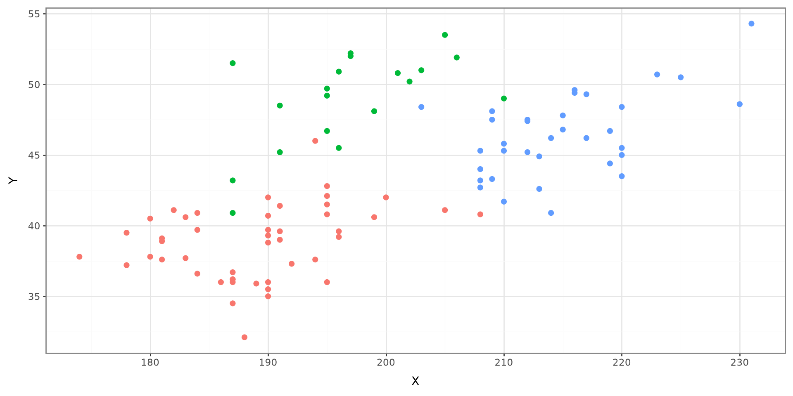

K-Nearest Neighbors
Bayes’ Classifier
Linear and Quadratic Discriminant Analysis
Naive Bayes
The practice of classifying data points into different categories.
K-Nearest Neighbors will assign a category to a new data point based on the majority category of its K nearest neighbors.

The distance between a given point and the training data must be computed. These are the most commonly used distances:
Manhattan
Euclidean
Minkowski
\[ d(x,y) = \sum_{i=1}^{p} |x_i - y_i| \]
\(x\): vector values of individual point
\(y\): vector values of new point
\(p\): length of vector
\[ d(x,y) = \sqrt{\sum_{i=1}^{p} (x_i - y_i)^2} \]
\[ d(x,y) = \left( \sum_{i=1}^{p} |x_i - y_i|^w \right)^{\frac{1}{w}} \]
Given a training data set, conduct the following steps:
Compute the distance between a new data point and every point in the training data set.
Choose the \(K\) nearest training data points to the new point using the smallest distance.
Categorize the new data point based on the majority of category from the \(K\) nearest training data points.
Bayes Classifier is used to classify a data point to a category \(c\)
\[ f(\boldsymbol x) = argmax_{c \in C} f(C|\boldsymbol X) \]
\[ f(C = c|\boldsymbol X = x) = \frac{f(\boldsymbol X | C)\pi_c}{f(\boldsymbol X)} \]
\(f(\boldsymbol X| C)\): conditional distribution of \(\boldsymbol X\)
\(\pi_c\): probability of observing category \(C\)
\(f(\boldsymbol X)\): marginal distribution of \(\boldsymbol X\)
To apply Bayes classifier, we must specify the form of \(f(\boldsymbol X| C)\) and \(f(\boldsymbol X)\). Common distributions are:
Normal
Bernoulli
Multinomial
Linear Discriminant Analysis is used to classify a new data point, from a set of classifications, given information from a set of predictors.
LDA classifies data using a Bayes classifier and imposing a normal distribution to the model.
\[ f_k(\boldsymbol X) = \frac{1}{\sqrt{2\pi\sigma^2}}\exp\left\{\frac{(x-\mu_k)^2}{2\sigma^2}\right\} \]
\[ f(X) = \sum^K_{l=1} \pi_l f_l(X) \]
\[ \delta_k = f_k(c_k|\boldsymbol X ) = \frac{f_k(\boldsymbol X)\pi_c}{f(\boldsymbol X)} \]
\[ \delta_k(x) = x\frac{\mu_k}{\sigma^2}-\frac{\mu_k^2}{\sigma^2} + \ln(\pi_k) \]
Let \(Y_i=c_l\), \(l=1\ldots, K\), and \(X_i=x_i\) bet the data from n observations:
\[ \hat\mu_k = \frac{1}{n_k}\sum^n_{i=1(Y_i=c_k)} x_i \]
\[ \hat\sigma^2=\frac{1}{n-K}\sum^K_{l=1}\sum_{i=1(Y_i=c_l)}^n(x_i-\hat\mu_l)^2 \]
\[ f_k(\boldsymbol X) = \frac{1}{(2\pi)^{p/2}|\Sigma|^{1/2}}\exp\left\{(\boldsymbol x-\boldsymbol{\mu_k})^{\mathrm T}\Sigma^{-1}(\boldsymbol x-\boldsymbol \mu_k)\right\} \]
\[ f(\boldsymbol X) = \sum^K_{l=1} \pi_l f_l(\boldsymbol X) \]
\[ \delta_k(\boldsymbol x) = \boldsymbol x^{\mathrm T}\Sigma^{-1}\boldsymbol \mu_k-\frac{1}{2}\boldsymbol \mu_k^{\mathrm T}\Sigma^{-1}\boldsymbol \mu_k + \ln(\pi_k) \]
Classify each new data point as class \(c_k\) based on the largest \(\delta_k(\boldsymbol X)\).
In LDA, it is assumed that \(\Sigma\) from \(\boldsymbol X\) is the same for all classification groups. In Quadratic Discriminant Analysis, this assumption is relaxed, resulting in \(\Sigma_k\) for each classification.
\[ f_k(\boldsymbol X) = \frac{1}{(2\pi)^{p/2}|\Sigma_k|^{1/2}}\exp\left\{(\boldsymbol x-\boldsymbol{\mu_k})^{\mathrm T}\Sigma_k^{-1}(\boldsymbol x-\boldsymbol \mu_k)\right\} \]
\[ \delta_k(\boldsymbol x) = -\frac{1}{2}\boldsymbol x^{\mathrm T}\Sigma_k^{-1}\boldsymbol x + \boldsymbol x^{\mathrm T}\Sigma_k^{-1}\boldsymbol \mu_k-\frac{1}{2}\boldsymbol \mu_k^{\mathrm T}\Sigma_k^{-1}\boldsymbol \mu_k - \frac{1}{2}\ln|\Sigma_k| + \ln(\pi_k) \]
A Naive Bayes classifier, assumes the predictors in \(\boldsymbol X\) are independent of each other.
\[ f_k(\boldsymbol X) = \prod^p_{j} f_{jk}(x_j|c_k) \]
Normal: \(N(\mu_{jk}, \sigma^2_{jk})\)
Nonparametric
Use the penguins data set from palmerpenguins and categorize the following data: bill_depth = 19, bill_length = 40, flipper_length = 185, and body_mass = 3345. Use a KNN algorithm with the following distances:
Manhattan
Euclidean
Minkowski (\(w=5\))
import numpy as np
def manhattan(x, y):
return np.sum(np.abs(x - y))
def euclidean(x, y):
return np.sqrt(np.sum((x - y) ** 2))
def minkowski_5(x, y):
return np.sum(np.abs(x - y) ** 5) ** (1 / 5)
knn_columns = [
"bill_depth_mm",
"bill_length_mm",
"flipper_length_mm",
"body_mass_g",
]
x = penguins[knn_columns].to_numpy()
y_new = np.array([19, 40, 185, 3345])
manx = pd.Series(
np.apply_along_axis(manhattan, 1, x, y=y_new),
index=penguins.index,
).rank()
eucx = pd.Series(
np.apply_along_axis(euclidean, 1, x, y=y_new),
index=penguins.index,
).rank()
minx = pd.Series(
np.apply_along_axis(minkowski_5, 1, x, y=y_new),
index=penguins.index,
).rank()
penguins_rank = penguins.assign(manx=manx, eucx=eucx, minx=minx)
# penguins_rank.sort_values("manx")[["species"]]
# penguins_rank.sort_values("eucx")[["species"]]
# penguins_rank.sort_values("minx")[["species"]]